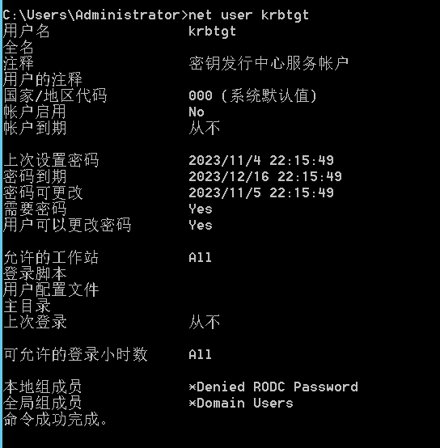
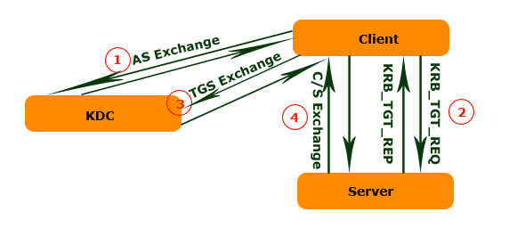

LM HASH
生成规则
1 | 1.用户的密码被限制为最多14个字符。 |
python脚本
1 | import hashlib |
NTLM HASH
生成规则
1 | 1.首先将密码字符串转化为ASCII字符串 |
python脚本
1 | import hashlib |
HASH爆破
Windows访问控制模型
kerberos预身份验证
kerberos协议
名词解释
| 简称 | 全拼 | 解释 |
|---|---|---|
| DC | Domain Controller | 域控 |
| krbtgt | KDC秘钥发行中心服务账户 | |
| KDC | Key Distribution Center | 秘钥分发中心，由域控担任 |
| AS | Authentication Service | 认证服务 |
| TGS | Ticket Granting Service | 票据授予服务 |
| TGT | Ticket Granting Ticket | TGT认购权证 |
| ST | Service Ticket | ST服务票据 |
| PAC | Privilege Attribute Certificate | 特权属性证书 |
| SPN | Service Principal Name | 服务主体名称 |
基础概念
KDC:
KDC秘钥分发中心是一种网络服务，他向活动目录域内的用户和计算机提供临时会话票据和临时会话秘钥，其服务账户为krbtgt。KDC作为活动目录域服务ADDS的一部分运行在每个域控制器上

krbtgt:
krbtgt账户是在创建活动目录时系统自动创建的一个账号，其作用是KDC秘钥分发中心的服务账号，其密码是随机生成的，无法正常登录主机。主要作用是生成和存储用于服务票据 (Service Tickets) 的密钥，这些票据用于在用户和服务之间进行身份验证和授权。它是域中所有用户和服务的票据颁发者
AS:
身份认证服务，它执行初始身份验证并为用户颁发TGT(票证授予票证)
TGS：
票据授权服务，它根据用户身份票据权限来颁发服务票据
PAC:
特权属性证书，其中包含的是各种授权信息、附加凭据信息、配置文件和策略信息等。例如用户所属的用户组，用户所具有的权限等。因为在域中不同权限的用户所能访问的资源是不同的，因此微软设计PAC来辨别用户身份和权限。在一个正常的kerberos认证流程中，KDC返回的TGT和ST都是带有PAC的，这样服务端再接收到客户端请求的时候不再需要借助KDC的帮助提供完整的授权信息来完成对用户权限的判断，而只需要根据请求中所包含的PAC信息直接与本地资源的ACL相比较做出裁决
SPN:
SPN（Server Principal Names）服务主体名称，是服务实例的唯一标识符（例如：HTTP、SMB、Mysql等）。
认证流程
基础模型
首先kerberos协议解决的是“如何证明某个人确确实实就是他或她所声称的那个人”的问题，也就是 client请求Server，那么必须让Server对client进行有效的认证。
最最简单的模型就是有一个c-s-key仅存于Client和Server，Client向Server提供c-s-key来证明他是Client
Client对Server提供两组信息:
1、代表Client自身Identity的信息，为了简便，它以明文的形式传递
2、将Client的Identity使用c-s-key作为Public Key、并采用对称加密算法进行加密
由于c-s-key仅仅被Client和Server知晓，所以被Client使用c-s-key加密过的Client Identity只能被Client和Server解密。
Long-term Key/Master Key：
在Security的领域中，有的Key可能长期内保持不变，比如你在密码，可能几年都不曾改变，这样的Key、以及由此派生的Key被称为Long-term Key，它的使用原则是：被Long-term Key加密的数据不应该在网络上传输。一旦这些被Long-term Key加密的数据包被恶意的网络监听者截获，在原则上，只要有充足的时间，他是可以通过计算获得你用于加密的Long-term Key的。
对于一个Account来说，密码往往仅仅限于该Account的所有者知晓，但是密码却又是证明身份的凭据，所以必须通过基于你密码的派生的信息来证明用户的真实身份，一般将你的密码进行Hash运算得到一个Hash code, 我们一般管这样的Hash Code叫做Master Key。由于Hash Algorithm是不可逆的，同时保证密码和Master Key是一一对应的，这样既保证了你密码的保密性，又保证了Master Key在证明身份上和密码的相同效力
Short-term Key/Session Key：
由于这种Key只在一段时间内有效，即使被加密的数据包被黑客截获，等他把Key计算出来的时候，这个Key早就已经过期了。
看到这里就能明白上面说的Client和Server共同拥有的c-s-key为一个Short-term Key，那么该如何得到这个c-s-key呢
这里就可以引入KDC了，对一个Windows域来说，DC（域控）扮演着KDC的角色，KDC维护着一个存储着该Domain中所有帐户的Account Database（一般地，这个Account Database由AD来维护），也就是说，它知道属于每个Account的名称和派生于该Account Password的Master Key。

Kerberos整个认证过程通过4个sub-protocol来完成，这4个sub-protocol分别为：
1、Authentication Service Exchange
2、Ticket Granting Service Exchange
3、Client/Server Exchange
4、User2User Sub-Protocol
其实一开始的框架只有前3个sub-protocol，User2User Sub-Protocol是为了有效地保障Server的安全后来增加的
下图简单展示了完成这个4个Sub-protocol所进行的Message Exchange
<1>AS Exchange(Client2AS)
KRB_AS_REQ：
Client向AS发送Authentication Service Request，并且Client使用自己的Master Key对KRB_AS_REQ的主体部分进行加密。KRB_AS_REQ的大体包含以下的内容：
1 | Pre-authentication data |
KRB_AS_REP：
AS只需从Account Database中提取Client对应的Master Key对Pre-authentication data进行解密，如果是一个合法的Timestamp，则可以证明发送放提供的是正确无误的密码，验证通过之后，AS将一份KRB_AS_REP发送给Client。KRB_AS_REP大体包含：
1 | SKDC-Client(被KDC用Client的Master Key加密) |
Client使用Master解密得到SKDC-Client，携带TGT进入下一阶段
<2>AS Exchange(Server2AS)
重复和第一步相似的操作，只不过这次是Server与AS之间进行，结果是获得了
注意这一步可能发生在第一步之前，然后Server将得到的TGT缓存。当然也可能是在Client向Server请求TGT时发生
<3>get TGT from Server
这一步的主要任务是Client向获得封装了SKDC-Server的属于Server的TGT。如果该TGT存在于Server的缓存中，则Server会直接将其返回给Client。否则通过Server将通过AS Exchange从KDC获取，也就是我这里的第<2>步
<4>TGS Exchange
KRB_TGS_REQ：
Client 向KDC中的TGS发送KRB_TGS_REQ，大体包含以下内容 ：
1 | TGT(共有2个): |
TGS先得通过自己的Master Key对Client提供的TGT进行解密，得到SKDC-Client，再用这个SKDC-Client解密Authenticator进行验证，如果验证通过，再用 KDC Master key解密Server TGT得到SKDC-Server ,然后TGS向Client发送KRB_TGS_REP
KRB_TGS_REP：
1 | SServer-Client： |
Client收到KRB_TGS_REP，使用SKDC-Client解密出SServer-Client，那么这个时候就回到了我们最初的那个简单模型，Client可以和Server进行交互，不再需要KDC这个第三方了
<5>CS Exchange
KRB_AP_REQ:
Client创建Authenticator(用于证明自己就是Ticket的真正所有者)并用SServer-Client加密，最后将这个被加密过的Authenticator和ST作为KRB_AP_REQ发送给Server，RB_AP_REQ还包含一个Flag用于表示Client是否需要进行双向验证
Server通过SKDC-Server解密ST获得SServer-Client，通过SServer-Client解密Authenticator实现对Client的验证，验证成功，让Client访问需要访问的资源，否则直接拒绝对方的请求。